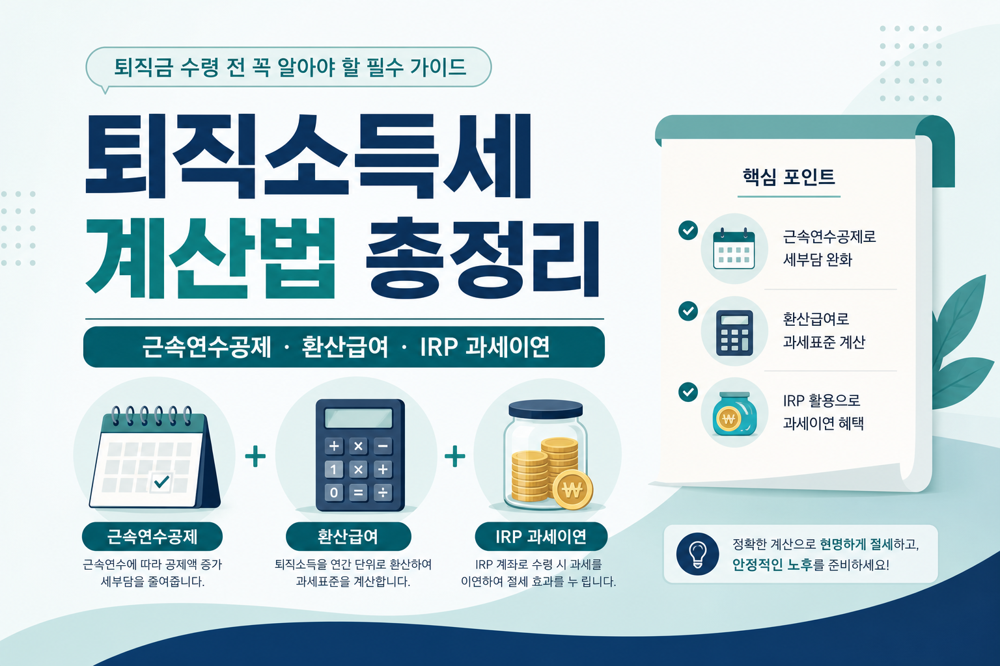

퇴직금 받을 때 세금 얼마나 뗄까? 퇴직소득세 계산법 총정리 (2026)
근속연수공제·환산급여·IRP 과세이연까지, 초보 눈높이로 한 번에

은퇴가 가까워지면 통장에 찍힐 퇴직금 숫자보다 먼저 따라오는 질문이 있습니다. “저거에서 세금은 얼마나 떼는 거지?” 월급쟁이로 오래 일해 온 분들일수록, 한 번에 큰돈이 들어오는 순간이 낯설고 불안합니다. 오늘은 확정된 계산 구조만 가지고, 퇴직소득세가 어떻게 나오는지 초보 눈높이로 풀어 보겠습니다.
먼저 읽어주세요
본 글은 정보 제공이며 세무·재무 자문이나 특정 금융상품 권유가 아닙니다. 개인별 근속연수·퇴직급여·비과세·중간정산 이력이 다르면 결과가 달라집니다. 정확한 계산은 홈택스(hometax.go.kr) 모의계산에서 확인 필수입니다. 결정은 본인 상황과 전문가 상담 후에 하세요.
- 퇴직소득세 계산 4단계를 순서대로 풀어 드립니다.
- 근속연수공제표·환산급여공제표·기본세율을 표로 정리합니다.
- 국세청 공식 예시(근속 20년·퇴직금 1억 → 산출세액 112만원)를 단계별로 따라갑니다.
- IRP로 세금을 미루고, 연금 수령 시 감면받는 포인트까지 연결합니다.
1. 도입 — “퇴직금에서 세금 얼마나 떼일까?”
동료 모임에서 은퇴 이야기가 나오면, 집값·국민연금 다음에 꼭 나오는 주제가 퇴직금입니다. 수십 년 일한 대가가 한꺼번에 들어오니 마음이 놓이는 것 같다가도, “세금이 몇 퍼센트야?” “지방세도 따로야?” 같은 말이 바로 이어집니다.
월급에 붙는 근로소득세 감각으로 퇴직금을 보면 더 겁이 납니다. 그런데 퇴직소득세는 설계 자체가 조금 다릅니다. 오랜 근속을 반영해 공제를 키우고, 연 단위로 환산한 뒤 세율을 적용하는 구조입니다. 그래서 같은 금액이라도 “일반 소득처럼 한 번에 세율 때리기”보다 부담이 작아지는 경우가 많습니다.
물론 “작다”가 “없다”는 아닙니다. 근속이 짧거나 금액이 크면 체감이 달라지고, 지방소득세도 별도로 붙습니다. 아래에서는 구조를 먼저 익히고, 국세청이 공개한 계산 예시로 감을 잡은 뒤, IRP로 세금을 미루는 선택까지 이어가겠습니다. 정확한 계산은 홈택스(hometax.go.kr) 모의계산에서 확인 필수입니다.
이 글을 읽기 전에 준비해 두면 좋은 것은 세 가지뿐입니다. 대략적인 근속연수, 예상 퇴직급여액, 그리고 중간정산을 했던 적이 있는지 여부입니다. 숫자 하나까지 맞출 필요는 없습니다. “어느 칸에 내가 들어가는지”만 보이면, 홈택스 모의계산 화면이 훨씬 덜 낯설어집니다. 가족에게 설명할 때도 “세금이 몇 퍼센트야?”보다 “근속공제 다음에 연 환산해서 다시 곱한다”는 한 줄이 더 도움이 됩니다.
2. 퇴직소득세는 일반 세금과 뭐가 다른가
핵심을 한 문장으로 말하면 이렇습니다. 근속연수로 나눠 보고, 공제를 크게 준 뒤, 다시 근속연수로 곱해 세금을 맞춘다는 것입니다. 월급처럼 “받은 해에 받은 금액 전부”에 바로 세율을 얹는 방식과 결이 다릅니다.
근속이 길수록 공제↑
근속연수공제·환산급여공제가 커져, 같은 퇴직금이라도 과세표준이 줄어드는 구조입니다.
연 단위로 환산
한꺼번에 받은 돈을 “1년치로 환산”해 세율을 적용한 뒤, 다시 근속연수로 되돌립니다.
실효세율이 낮아지기 쉬움
공식 예시(20년·1억)에서는 산출세액 112만원, 실효세율 약 1.1%로 안내됩니다.
지방소득세 별도
퇴직소득세(산출세액)의 10%가 지방소득세로 따로 부과됩니다.
“유리하다”는 말은 상대적입니다. 근속이 짧으면 공제가 작아지고, 환산급여가 커지면 세율 구간도 올라갈 수 있습니다. 그래서 구조를 아는 것과, 내 숫자로 홈택스에서 확인하는 것을 반드시 같이 해야 합니다. 정확한 계산은 홈택스(hometax.go.kr) 모의계산에서 확인 필수입니다.
3. 계산 4단계 쉽게 풀기
국세청이 안내하는 흐름을 초보 말로 풀어 보면 네 칸입니다. 중간에 비과세·중간정산 등 변수가 끼면 칸이 늘어날 수 있으니, 여기서는 기본 골격만 잡겠습니다.
-
① 퇴직소득금액
퇴직급여액에서 비과세소득을 뺀 금액입니다. “통장에 찍힌 총액”과 “과세 대상”이 다를 수 있습니다. -
② 근속연수공제 차감
일한 햇수에 따라 정해진 공제를 뺍니다. 근속이 길수록 이 칸이 커집니다. 표는 다음 섹션에 있습니다. -
③ 환산급여
(퇴직소득금액 − 근속연수공제) ÷ 근속연수 × 12 한 번에 받은 돈을 “연간 급여처럼” 바꿔 보는 단계입니다. -
④ 과세표준 → 세율 → 최종 산출세액
과세표준 = 환산급여 − 환산급여공제. 기본세율을 적용해 환산산출세액을 구한 뒤, 환산산출세액 ÷ 12 × 근속연수로 최종 산출세액을 만듭니다.
말이 길어 보이지만, 실제로는 “공제 → 연 환산 → 세율 → 다시 곱하기” 순서입니다. 손으로 따라가 보되, 최종 확정은 홈택스가 정본입니다. 정확한 계산은 홈택스(hometax.go.kr) 모의계산에서 확인 필수입니다.
계산기를 두드리기 전에 자주 헷갈리는 지점만 짚겠습니다. “근속연수”는 달력상 대충 센 햇수가 아니라, 세법·원천징수에서 인정하는 근속기간입니다. “퇴직급여액”도 명예퇴직 위로금·그 밖의 지급이 어떻게 분류됐는지에 따라 칸이 달라질 수 있습니다. 그래서 회사 지급 명세·원천징수영수증을 옆에 두고 홈택스에 입력하는 편이 안전합니다. 이 글의 표는 지도이고, 내 좌표는 서류와 모의계산이 찍어 줍니다.
4. 근속연수공제표·환산급여공제표
숫자를 외울 필요는 없습니다. “어느 칸에 내가 들어가는지”만 보면 됩니다. 아래는 확정된 공제 구조입니다.
| 근속연수 | 근속연수공제 |
|---|---|
| 5년 이하 | 근속연수 × 100만원 |
| 5년 초과 10년 이하 | 500만원 + (근속연수 − 5) × 200만원 |
| 10년 초과 20년 이하 | 1,500만원 + (근속연수 − 10) × 250만원 |
| 20년 초과 | 4,000만원 + (근속연수 − 20) × 300만원 |
※ 정확한 계산은 홈택스(hometax.go.kr) 모의계산에서 확인 필수입니다.
| 환산급여 | 환산급여공제 |
|---|---|
| 800만원 이하 | 전액 공제 |
| 7,000만원 이하 | 800만원 + (환산급여 − 800만원) × 60% |
| 1억원 이하 | 4,520만원 + (환산급여 − 7,000만원) × 55% |
| 3억원 이하 | 6,170만원 + (환산급여 − 1억원) × 45% |
| 3억원 초과 | 1억 5,170만원 + (환산급여 − 3억원) × 35% |
※ 정확한 계산은 홈택스(hometax.go.kr) 모의계산에서 확인 필수입니다.
| 과세표준 | 세율 | 누진공제 |
|---|---|---|
| 1,400만원 이하 | 6% | — |
| 5,000만원 이하 | 15% | 126만원 |
| 8,800만원 이하 | 24% | 576만원 |
| 1.5억원 이하 | 35% | 1,544만원 |
| 3억원 이하 | 38% | 1,994만원 |
| 5억원 이하 | 40% | 2,594만원 |
| 10억원 이하 | 42% | 3,594만원 |
| 10억원 초과 | 45% | 6,594만원 |
※ 정확한 계산은 홈택스(hometax.go.kr) 모의계산에서 확인 필수입니다.
5. 실제 계산 예시 — 근속 20년, 퇴직금 1억 → 112만원
국세청 공식 계산 예시를 그대로 따라가 보겠습니다. 가정: 근속 20년, 퇴직금 1억원(비과세 없음으로 단순화한 안내 예시). 이 예시는 “내 세금도 반드시 112만원”이라는 뜻이 아닙니다. 같은 근속·같은 금액이라도 중간정산·비과세·지급 구성이 있으면 결과가 달라집니다. 다만 손으로 한 바퀴 돌려 보면, 표에 있는 칸이 실제로는 어떤 순서로 움직이는지 감이 잡힙니다.
| 단계 | 내용 | 금액 |
|---|---|---|
| 근속연수공제 | 20년 구간 적용 | 4,000만원 |
| 환산급여 | (1억 − 4,000만) × 12 ÷ 20 | 3,600만원 |
| 환산급여공제 | 800만 + (3,600만 − 800만) × 60% | 2,480만원 |
| 과세표준 | 3,600만 − 2,480만 | 1,120만원 |
| 환산산출세액 | 1,120만 × 6% | 67.2만원 |
| 최종 산출세액 | 67.2만 ÷ 12 × 20 | 112만원 |
실효세율은 약 1.1%로 안내됩니다. 여기에 지방소득세 10%가 별도로 붙습니다. 약 11.2만원 수준입니다. 국세 112만원 + 지방소득세 약 11.2만원을 합쳐 체감하면 “세금 통장에서 나가는 선”이 보입니다.
참고로, 근속 20년에 퇴직금이 2억원이면 퇴직소득세는 약 702만원 수준으로 알려져 있습니다(검색·안내 검증 수치). 금액이 두 배가 된다고 세금도 정확히 두 배가 되는 구조는 아닙니다. 공제·세율 구간이 겹치기 때문입니다. 정확한 계산은 홈택스(hometax.go.kr) 모의계산에서 확인 필수입니다.
이 예시에서 배울 점
- 1억을 “통째로 세율” 붙인 결과가 아닙니다.
- 근속공제 4,000만원이 먼저 빠지고, 연 환산 후 다시 곱합니다.
- 지방소득세 10%를 빼먹으면 체감 금액이 어긋납니다.
6. 근속연수가 길수록 왜 유리한가
같은 퇴직금이라도 근속이 길면 세금이 줄어드는 이유는 두 갈래입니다. 첫째, 근속연수공제 자체가 커집니다. 둘째, 환산급여를 만들 때 근속연수로 나누기 때문에, 근속이 길수록 환산급여가 작아지기 쉽고 그 결과 환산급여공제·세율 구간에도 유리하게 작용하는 경우가 많습니다.
| 근속연수 | 근속연수공제(표 적용) | 한 줄 메모 |
|---|---|---|
| 10년 | 1,500만원 | 5년 초과 10년 이하 구간 |
| 20년 | 4,000만원 | 공식 예시와 동일 |
| 30년 | 7,000만원 | 20년 초과 구간: 4,000만 + 10×300만 |
위 표는 “최종 세금”이 아니라 공제 칸이 얼마나 달라지는지만 보여 줍니다. 10년·30년의 최종 산출세액은 사람마다 비과세·중간정산·퇴직급여 구성이 달라 여기서 단정하지 않습니다. 다만 방향은 분명합니다. 같은 퇴직금이라도 근속이 길수록 공제 여지가 커집니다. 정확한 계산은 홈택스(hometax.go.kr) 모의계산에서 확인 필수입니다.
“그럼 근속을 억지로 늘려야 하나?”라고 묻는 분도 계십니다. 이 글은 이직·퇴직 시점을 미루라고 권하지 않습니다. 다만 이미 쌓인 근속이 세금 계산에서 얼마나 중요한 변수인지는 알아 두면, 회사 안내문을 읽을 때 덜 당황합니다. 중간정산을 했던 분들은 “총 근속”과 “이번 퇴직분 근속”이 어떻게 잡히는지가 중요합니다. 서류·원천징수 내역을 먼저 모으고, 홈택스 모의계산에 넣는 편이 안전합니다.
7. IRP로 세금 미루고 감면받는 법
퇴직금을 회사·은행에서 바로 현금으로 받지 않고, IRP(개인형퇴직연금) 계좌로 이전하면 퇴직소득세를 당장 내지 않고 과세이연할 수 있습니다. “안 낸다”가 아니라 “나중에 받을 때 정산한다”에 가깝습니다.
나중에 연금으로 수령하면, 원래 내야 할 퇴직소득세에서 30~40% 감면이 적용됩니다. 안내 기준은 연금 수령 기간이 10년 이내면 30%, 10년 초과면 40%입니다. 일시금으로 받으면 이 감면은 없습니다.
-
과세이연
IRP로 이전하면 퇴직 시점에 세금을 바로 떼지 않을 수 있습니다. 계좌·이전 절차는 금융회사·회사 안내를 따르세요. -
연금 수령 감면
10년 이내 30%, 초과 40% 감면(퇴직소득세 기준). 일시금은 감면 없음. -
연말정산 세액공제와는 다른 이야기
자비로 넣는 연금저축·IRP 세액공제는 연금저축·IRP 연말정산 세액공제 총정리에서 따로 정리했습니다. 오늘은 “퇴직금 이전·과세이연”에 초점을 둡니다.
IRP가 만능은 아닙니다. 중도인출·해지 조건, 운용 수수료, 수령 방식에 따라 결과가 달라집니다. 특정 은행·상품을 권하지 않습니다. “세금 시점을 미룰지, 지금 확정할지”만 구조로 이해하시면 됩니다. 정확한 계산은 홈택스(hometax.go.kr) 모의계산에서 확인 필수입니다.
과세이연을 선택하면 “지금 통장에 찍히는 현금”은 줄고, “나중에 연금·일시금으로 받을 잔액”이 남습니다. 생활비·대출·의료비처럼 당장 써야 할 돈이 크면 이연만 고집하기 어렵습니다. 반대로 당장 쓸 일이 없고, 연금으로 나눠 받을 계획이 있으면 세금 시점과 감면 구조를 같이 보는 편이 이치에 맞습니다. 어느 쪽이 인생에 맞는지는 세율이 아니라 현금흐름이 결정합니다.
8. 자주 묻는 질문
Q. 중간에 퇴직금을 정산(중간정산)했으면 세금이 어떻게 되나요?
중간정산분과 최종 퇴직분이 나뉘어 계산되는 경우가 많습니다.
근속연수·이미 낸 세금·남은 퇴직급여를 각각 확인해야 합니다.
이 글에서 일률 숫자를 찍지 않습니다. 정확한 계산은 홈택스(hometax.go.kr) 모의계산에서 확인 필수입니다.
Q. 명예퇴직금·위로금도 퇴직소득에 들어가나요?
성격과 지급 근거에 따라 퇴직소득으로 보는 경우가 많습니다.
다만 모든 명목의 돈이 자동으로 같은 칸은 아닙니다.
회사 원천징수 안내·지급 명세를 기준으로 하시고, 애매하면 세무 상담을 받으세요.
Q. 일시금으로 받는 게 나을까요, 연금이 나을까요?
세금만 보면, IRP로 이연 후 연금 수령 시 30~40% 감면이 있어
“세금 측면”에서는 연금 쪽이 유리한 경우가 많습니다.
다만 생활비·의료비·주택 자금처럼 당장 현금이 필요하면 선택이 달라집니다.
투자 수익을 약속하거나 상품을 권하지 않습니다. 필요 시점과 세금 시점을 같이 보세요.
Q. 지방소득세는 어디에 붙나요?
퇴직소득세 산출세액의 10%가 별도로 부과됩니다.
공식 예시(산출세액 112만원)에서는 약 11.2만원 수준입니다.
정확한 계산은 홈택스(hometax.go.kr) 모의계산에서 확인 필수입니다.
Q. 홈택스 모의계산은 언제 해보면 좋나요?
퇴직 일정이 보이기 시작하면 한 번, 회사 지급 명세가 나온 뒤 한 번 더 보시면 좋습니다.
예상액과 확정액이 어긋나는 지점을 미리 찾을 수 있습니다.
모의계산 결과가 곧 납부서가 아니니, 최종은 원천징수·신고 안내를 따르세요.
가족 회의 전에 한 장만 출력해 두면 질문이 짧아집니다.
정확한 계산은 홈택스(hometax.go.kr) 모의계산에서 확인 필수입니다.
9. 마무리 — 구조만 알아도 불안이 줄어듭니다
정리하면 이렇습니다. 퇴직소득세는 ①퇴직소득금액 → ②근속연수공제 → ③환산급여 → ④환산급여공제·세율·재환산 순서입니다. 근속이 길수록 공제가 커져 같은 퇴직금이라도 세금이 줄어들기 쉽습니다. 국세청 예시(20년·1억)에서는 산출세액 112만원, 실효세율 약 1.1%, 지방소득세 약 11.2만원입니다. IRP로 이전하면 과세이연이 가능하고, 연금 수령 시 30~40% 감면(일시금은 감면 없음)입니다.
은퇴 준비는 세금 한 칸으로 끝나지 않습니다. 공적연금 시기는 국민연금 조기수령 vs 연기수령에서, 집 담보 현금흐름은 주택연금 조건·수령액 총정리에서 이어서 보시면 됩니다. 오늘은 “퇴직금 세금 구조”만 확실하게 가져가시면 충분합니다.
마지막으로 당부 하나만 남깁니다. 단톡방·유튜브 제목에 나온 “퇴직금 세금 ○○%”를 그대로 내 상황에 붙이지 마세요. 근속·금액·이연 여부에 따라 체감이 달라지고, 지방소득세까지 합쳐야 실제 통장 느낌이 나옵니다. 오늘 표와 공식 예시로 방향을 잡은 뒤, 홈택스 모의계산으로 내 숫자를 확인하는 순서면 충분합니다. 정확한 계산은 홈택스(hometax.go.kr) 모의계산에서 확인 필수입니다.
📎 출처·참고
- 국세청·홈택스(hometax.go.kr) 퇴직소득세 안내·모의계산
- 근속연수공제·환산급여공제·기본세율(누진공제) 구조
- 공식 예시: 근속 20년·퇴직금 1억 → 산출세액 112만원(실효세율 약 1.1%), 지방소득세 10% 별도
- IRP 과세이연 · 연금 수령 시 퇴직소득세 30%(10년 이내)·40%(초과) 감면, 일시금 감면 없음
- 연금저축·IRP 세액공제 · 국민연금 조기·연기 · 주택연금
함께 보면 좋은 도구
- 퇴직금 계산기 — 근속·급여 입력으로 대략치 확인
- 연봉·실수령액 계산기 — 은퇴 전 현금흐름 감 잡기

본 글은 정보 제공 목적이며 개인별 상황이 다르니 정확한 계산·상담은 홈택스(hometax.go.kr) 모의계산 및 전문가에게 확인하세요. 세무·재무·투자 자문이 아니며 특정 금융상품을 권유하지 않습니다. 예시 금액은 국세청 안내·공개 구조를 따른 것이며, 결정은 본인 상황·전문가 상담 후 하시기 바랍니다.